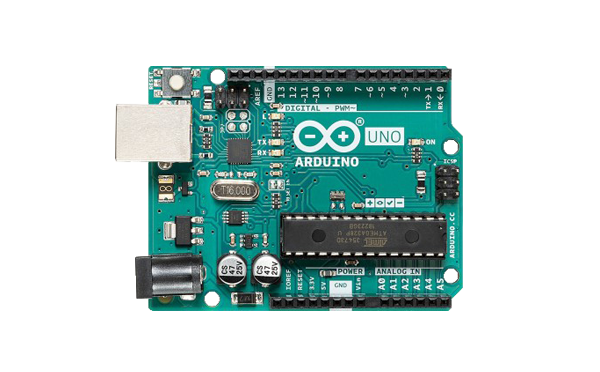
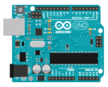

如何添加新的设备¶
简介¶
在Scratch-HW中设备就是在指控制板如：Arduino UNO、Arduino Nano等。
注意：在开启在scratchhw-gui的webpack服务器时，对此文件中的改动会自动触发webpack重新编译打包，所以修改文件或代码后直接保存即可查看效果，不需要重新启动webpack（即重新执行npm run start-open或npm run start指令 ）。
在scratchhw-gui添加设备图片和配置¶
- 根据以下参数与示例制作控制板的图片，请确保在周围留有盒适宽度的白色边缘。 这个图片将用于显示在设备选择界面中。
格式：png
分辨率：600x372
背景色：白色
你可以直接保存下面这个图片来参考制作，在完成后以驼峰规则命名这个图片文件，如：`arduinoUno.png

-
由前上一步制作的图片制作svg图。这步制作的两个图片将用于在连接设备时显示。
将控制板主体扣出删除图片的背景，将图片长宽比调整为108：87，控制板要尽可能的贴近图片边缘，减小空白，而后保存为png格式。而后将图片以同样的要求调整长宽比为1：1，再次保存。
访问这个在线格式转换的网站：aconvert.com。将刚刚制作好的两张图片上传转换为SVG格式，记住要选择**Resize image**选项，将其分别设置为 108x87**和**40x40。
保存108x87 的图片名称为：
<board name>-illustration.svg，如：arduinoUno-illustration.svg
保存40x40的图片名称为：
<board name>-small.svg，如 :arduinoUno-small.svg
-
将制作好的三张图片放置到以控制板的名称命名的文件夹中，如：
arduinoUno，将其移动到路径scratchhw-gui\src\lib\libraries\devices\下。完成后文件树结构将如下所示：
scratchhw-gui\src\lib\libraries\devices\ |- arduinoLeonardo\ |- arduinoMega2560\ |- baseToolbox\ |- ... |- <board name>\ |- <board name>.png |- <board name>-illustration.svg |- <board name>-small.svg |- index.jsx -
修改
index.jsx。在
scratchhw-gui\src\lib\libraries\devices\index.jsx文件中，你可以看到已经有一些设备的代码在这里了，我以Arduino UNO的参数举例。首先，import 资源图片。
import arduinoUnoIconURL from './arduinoUno/arduinoUno.png'; import arduinoUnoConnectionIconURLL from './arduinoUno/arduinoUno-illustration.svg'; import arduinoUnoConnectionSmallIconURL from './arduinoUno/arduinoUno-small.svg';而后设置设备。
{ name: 'Arduino Uno', deviceId: 'arduinoUno', collaborator: 'arduino', type: 'arduino', iconURL: arduinoUnoIconURL, description: ( <FormattedMessage defaultMessage="The best board to get started with electronics and coding." description="Description for the Arduino Uno device" id="gui.device.arduinoUno.description" /> ), featured: true, disabled: false, bluetoothRequired: false, serialportRequired: true, internetConnectionRequired: false, launchPeripheralConnectionFlow: true, useAutoScan: false, connectionIconURL: arduinoUnoConnectionIconURLL, connectionSmallIconURL: arduinoUnoConnectionSmallIconURL, connectingMessage: ( <FormattedMessage defaultMessage="Connecting" description="Message to help people connect to their arduino." id="gui.device.arduino.connectingMessage" /> ), baseToolBoxXml: arduinoBaseToolBox, programMode: ['realtime', 'upload'], programLanguage: ['block', 'c', 'cpp'], helpLink: 'https://store.arduino.cc/usa/arduino-uno-rev3' }* 星号代表这个参数是必须的
-
name*
设备显示的名称。
-
deviceId*
设备ID，将被在scratchhw-vm加载设备时使用。
-
collaborator
这个将在设备选择界面中的合作者条目中显示。
-
type*
告诉GUI该使用哪个代码生成器。
-
iconURL*
将在设备选择界面中显示。
-
description
将会在设备选择界面的iconURL下方显示，这里使用了FormattedMessage来提供多种语言下的不同翻译内容。
-
featured*
这是一个内部参数，他始终应该被设置为true。
-
disabled
如果设置为true，将会禁用这个设备选项，将显示为灰色并无法被选取。
-
bluetoothRequired/serialportRequired/internetConnectionRequired
设置为true将在设备选择界面要求栏中显示对应连接的图标，这几个参数只用于显示图标不会影响实际的连接功能。
-
launchPeripheralConnectionFlow*
设置为true会在选择设备后开启设备连接界面，建议设置为true。
-
useAutoScan
设置为true，将会自动连接扫描出的设备，不建议开启。
-
connectionIconURL*
将用于在设备连接界面中显示。
-
connectionSmallIconURL*
将显示在设备连接界面的顶部栏中。
-
connectingMessage*
这个信息将在设备连接时显示，不建议修改此内容。
-
baseToolBoxXml*
提供设备的基础积木内容，不建议修改。
-
programMode*
在设备不支持对应的编程模式时，会自动切换到支持的模式并锁定模式切换开关。同时也控制在设备选择界面中编程模式栏中的显示。
-
programLanguage*
仅用于在设备选择界面中编程语言栏中控制图标显示。
-
helpLink
将用于设备连接界面中，点击该界面中的帮助按钮就会打开这个链接。
-
-
在完成这些工作后，你应该能够在设备选择界面中看到新添加的设备了，但是如果我们点击它，什么都不会发送，我们仍需要在scratchhw-vm中添加设备的代码。
在scratchhw-vm中添加设备代码¶
基础功能代码¶
注意：由于目前只完成了Arduino设备的内容，所以以下内容仅适用于Arduino设备，其他类型的设备将在之后被添加。
-
在
scratchhw-vm\src\devices路径下创建一新的文件夹，命名为控制板的名称，如：arduinoUno。复制src\devices\arduinoUno\index.js到这个新的文件夹中，完成后文件树结构将如下所示：scratchhw-vm\src\devices\ |- arduinoLeonardo\ |- arduinoMega2560\ |- ... |- <board name>\ |- index.js -
现在我们来开始修改index.js文件。
在文件中，注释代码的注释都已经很详细了，下面仅介绍你需要修改的内容部分，和文件框架结构。
这个文件中分两个Class，
ArduinoUno与Scratch3ArduinoUnoDevice，前者负责实现与硬件的接口通讯等内容，后者用于实现设备的积木块内容，同时会调用前者，通过前者的接口函数积木开在实时模式下的功能代码。-
PID/VID过滤器
/* A list of USB device filters. If include '*' means disable the filter */ const PNPID_LIST = [ //https://github.com/arduino/Arduino/blob/1.8.0/hardware/arduino/avr/boards.txt#L51-L58 'USB\\VID_2341&PID_0043', 'USB\\VID_2341&PID_0001', 'USB\\VID_2A03&PID_0043', 'USB\\VID_2341&PID_0243', // For chinese clones that use CH340 'USB\\VID_1A86&PID_7523' // Uncomment this to close filter // '*' ];这个列表将会控制scratchhw-link过滤串口设备，防止用户为计算机上自带的串口或其他不相关设备的串口所困惑。
-
设备参数
/** * Configuration of build and flash. Used by arduino_debug and avrdude. * @readonly */ const DIVECE_OPT = { type: 'arduino', board: 'arduino:avr:uno', partno: 'atmega328p' }type参数告诉scratchhw-link使用那种编译器和烧写软件来接收处理上传请求。board参数用于提供给arduino_debug.exe。设定这个参数与我们在Arduino IDE中选择控制板类型的操作本质是一样的。 访问Arduino manpage.adoc了解更多参数选项和含义。partno参数用提供控制板的MCU型号给avrdude。访问avrdude Option-Descriptions了解更多参数选项和含义。 -
目录与积木
/** * @returns {Array.<object>} metadata for this extension and its blocks. */ getInfo() { return [ { // ... blocks: [ { // ... programMode: [ProgramModeType.UPLOAD] } ] //... }, { //... } ] }与常规scratchhw-vm extension不同的是，此处返回的是一个对象数组，包含多个目录。其中programMode用于设定积木支持的编程模式，如果没有设定这个参数则默认都支持。
-
实时模式功能代码¶
如果你想要你的设备支持实时模式，需要实现以下内容：
- 设备需要运行一个可以使用串口、蓝牙或以太网接口通讯控制的固件，比如Firmata。
- 在设备index.js文件中对应积木的handle函数中调用通讯协议收发控制控制板状态。
在scratch-HW的Arduino框架下，我们使用标准Firmata固件来实现这个功能， 下面以Arduino UNO的构架举例说明。
同样的在包含实时模式下的代码中，仍然分为两个层，一个负责底层协议的通讯，另一个负责根据对应积木的功能调用前者功能完成对应操作。
/**
* Set pin mode.
* @param {object} args - the block's arguments.
* @return {Promise} - a Promise that resolves after the set pin mode is done.
*/
setPinMode(args) {
this._peripheral.setPinMode(args.PIN, args.MODE);
return new Promise(resolve => {
setTimeout(() => {
resolve();
}, SerialportSendInterval);
});
}
在积木逻辑层，setPinMode函数调用了协议通讯层方法，并返回了一个Promise，该Promise在延时SerialportSendInterval(=5) ms后被resolve()，以这样的方式异步延时一段时间，让协议层完成发送，限制指令发送速率防止阻塞。
/**
* @param {PIN} pin - the pin to set.
* @param {MODE} mode - the pin mode to set.
* @return {Promise} - a Promise that resolves when writing to peripheral.
*/
setPinMode(pin, mode) {
pin = this.parsePin(pin);
switch (mode) {
case Mode.Input:
mode = this._firmata.MODES.INPUT;
break;
case Mode.Output:
mode = this._firmata.MODES.OUTPUT;
break;
case Mode.InputPullup:
mode = this._firmata.MODES.PULLUP;
break;
}
return this._firmata.pinMode(pin, mode);
}
在协议链路层的这个函数中，它调用了firmata 库中的方法，向设备发送了firmata指令。
了解更多firmata的内容和函数方法，请参考 firmata.js。
添加设备到extension manager¶
在 scratchhw-vm\src\extension-support\extension-manager.js 行数32，将你的新的设备index文件在列表中加入。
const builtinDevices = {
arduinoUno: () => require('../devices/arduinoUno'),
arduinoNano: () => require('../devices/arduinoNano')
<board id>: () => require('../devices/<board name>')
};
在完成这个步骤后，已经可以尝试在GUI中选择加载这个设备了，你看到设备对应的积木出现在工具栏中，可以尝试将他们拖动进入工作区，但是如果你是在编程模式下，此时并不会有对应的代码在右侧代码区生成，我们还需要再scratchhw-blocks中添加设备积木对应的代码转译函数。
在scratchhw-blocks中添加代码转译函数¶
注意：由于scratchhw-blocks在提供给gui和vm时经过了google-closure-compiler编译生成后才被webpack打包，在这个部分中的修改并不会被webpack自动探测编译，所以在修改这部分代码后需要在scratchhw-blocks下运行npm run prepublish重新编译打包，并重启gui的webpack服务器，即退出gui下运行的指令，并重新运行npm run start或npm run start-open。
目前Arduino设备对应的转码函数需要添加在 scratchhw-blocks\generators\arduino\arduino.js中。
下面以setDigitalOutput积木的代码转译函数为例。
Blockly.Arduino['pin_setDigitalOutput'] = function (block) {
var arg0 = block.getFieldValue('PIN') || '0';
var arg1 = Blockly.Arduino.valueToCode(block, 'LEVEL', Blockly.Arduino.ORDER_UNARY_POSTFIX) || 'LOW';
var code = "digitalWrite(" + arg0 + ", " + arg1 + ");\n";
return code;
};
显然这个函数的名称与vm中对应积木的opcode不同，这是因为在vm中，是通过一些函数处理才生产了blocks中定义积木的结构，在这个过程中积木的id是由${categoryInfo.id}_${blockInfo.opcode} 组成的，即目录id和积木id共同构成。所以pin目录下的setDigitalOutput积木的id就变成了pin_setDigitalOutput。
还有一点特别的是，如果积木菜单定义了acceptReporters: true属性，那么其值既可以下拉菜单选择，也可以被放置入的积木覆盖，在没有积木放入时其下拉菜单的值会被视为是一个新的积木。其id生成规则为${categoryInfo}_menu_${xmlEscape(menuName)}，即目录名称+menu+菜单名称。所以setDigitalOutput积木的level菜单就需要定义为pin_menu_level，才能在没有积木放置进入时正确解析。
Blockly.Arduino['pin_menu_level'] = function (block) {
var code = block.getFieldValue('level') || 'LOW';
return [code, Blockly.Arduino.ORDER_ATOMIC];
};
更多的代码转译函数的编写内容和机制参考：代码生成器 。
-
快速调试
由于scratchhw-blocks需要重新编译打包的问题，使得其调试过程及其繁琐，我们可以在GUI中导入scratchhw-blocks的位置对其函数重写，来实现快速调试。
在
scratchhw-gui\src\lib\blocks.js中，scratchhw-blocks被导入为ScratchBlocks我们直接在这个文件的export default function中添加想要调试的转译函数，对ScratchBlocks的内容进行补充或重写，不过注意这里头部的Blockly变量要改名为ScratchBlocks。/** * Connect scratch blocks with the vm * @param {VirtualMachine} vm - The scratch vm * @return {ScratchBlocks} ScratchBlocks connected with the vm */ export default function (vm) { //... ScratchBlocks.Arduino['pin_setDigitalOutput'] = function (block) { var arg0 = block.getFieldValue('PIN') || '0'; var arg1 = Blockly.Arduino.valueToCode(block, 'LEVEL', Blockly.Arduino.ORDER_UNARY_POSTFIX) || 'LOW'; var code = "digitalWrite(" + arg0 + ", " + arg1 + ");\n"; return code; }; }在这里加入的转译函数的效果与scratchhw-blocks中添加效果是一样的。在完成功能调试后，我们再将正确的代码移动到scratchhw-blocks中，将
ScratchBlocks替换回Blockly，并将blocks.js文件恢复即可。